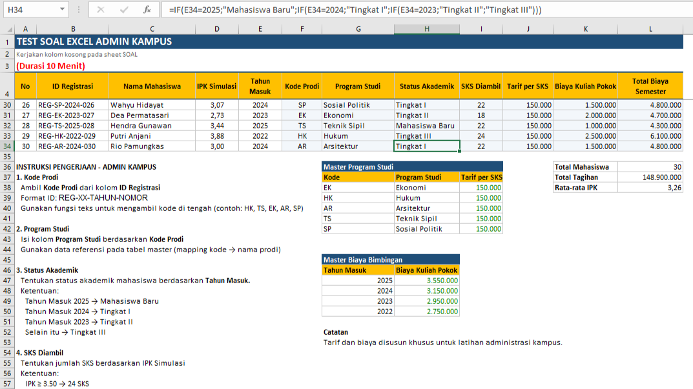
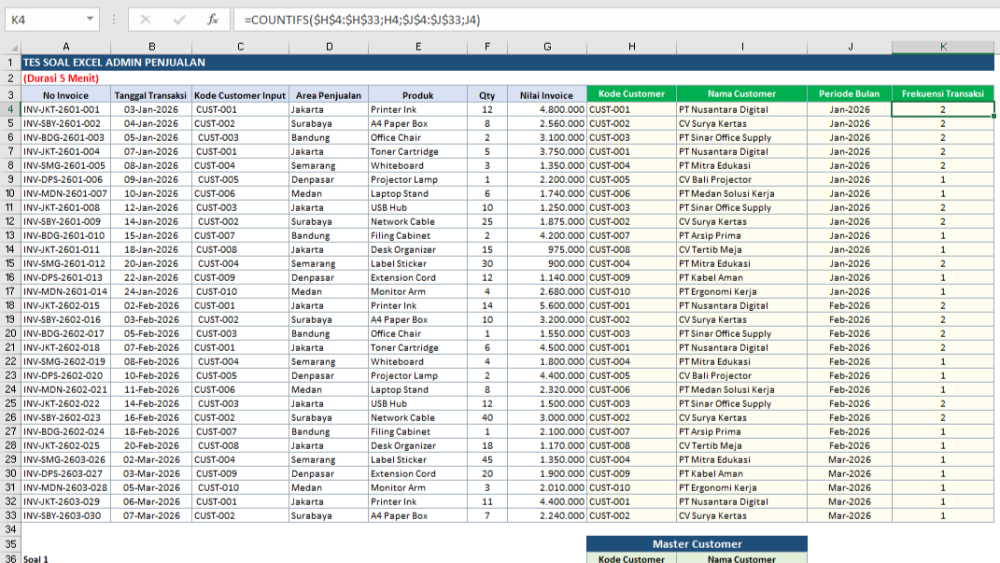
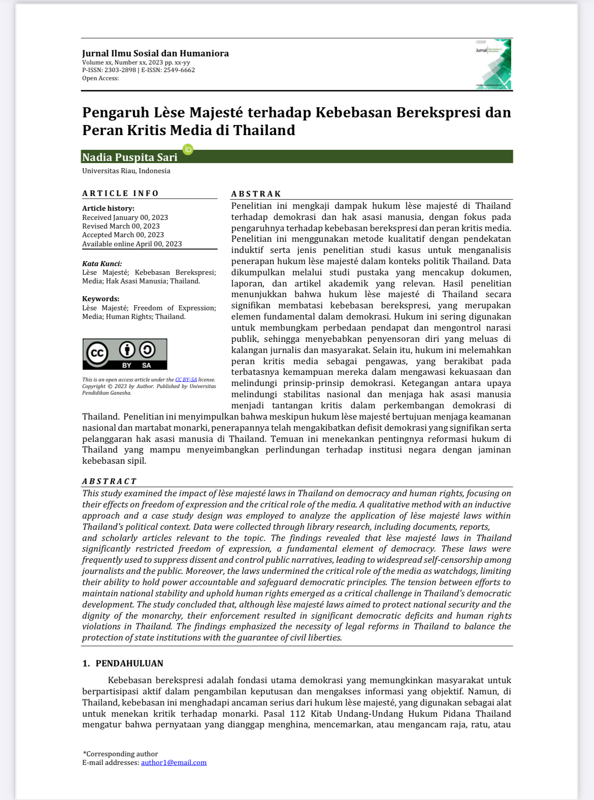
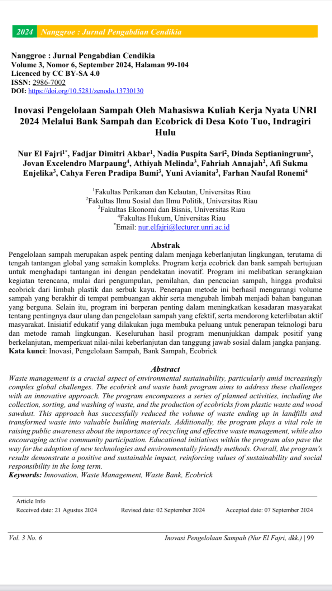
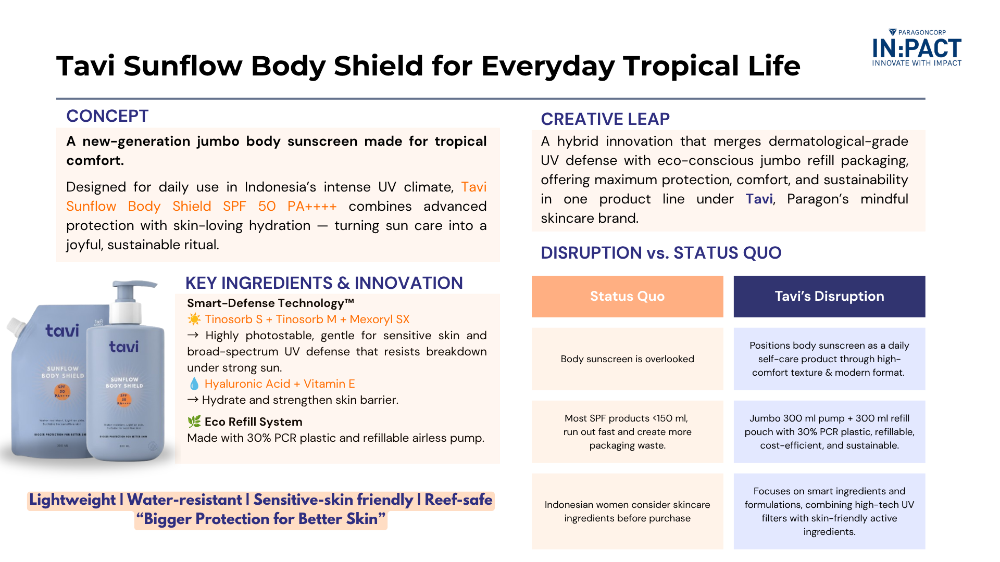
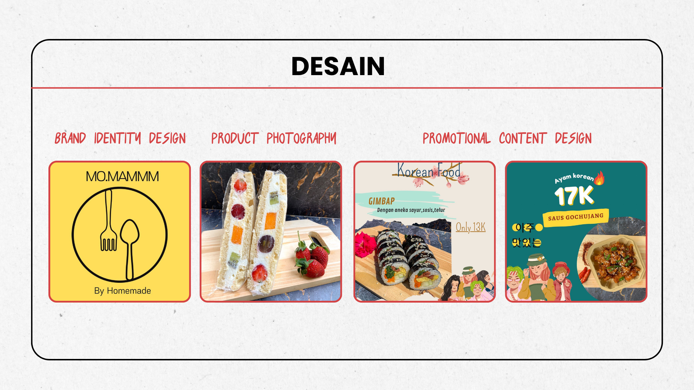
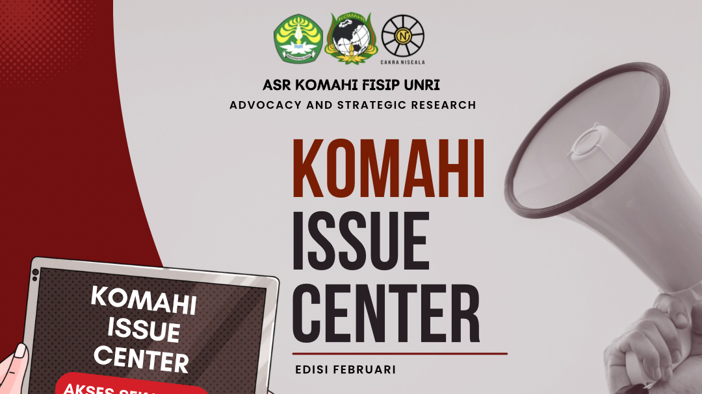
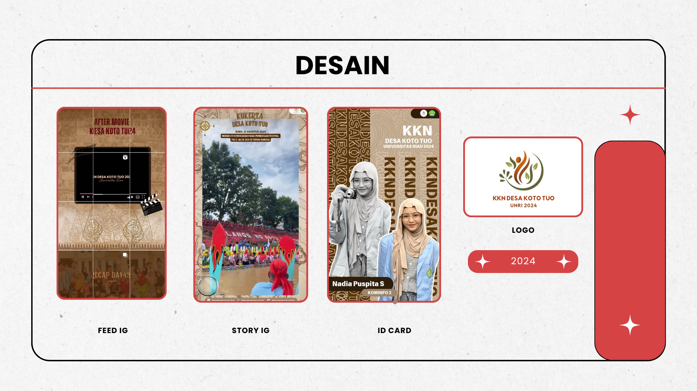

International Relations Graduate
Fresh Graduate with Analytical, Administrative & Organizational Skills
Menerjemahkan kemampuan riset dan penulisan dari latar belakang Hubungan Internasional menjadi insight berbasis data, didukung kemampuan teknis di Tableau, Power BI, dan Excel.
Featured Work
Dashboard Terbaik
Contoh dashboard interaktif yang menunjukkan proses analisis dari data mentah hingga insight bisnis.


About Me
Dari Riset Hubungan Internasional ke Data & Business Analytics
Selama menempuh studi Hubungan Internasional, saya terbiasa membedah isu kompleks melalui riset mendalam, menyusun argumen berbasis data, dan menyampaikannya dalam tulisan yang jelas dan terstruktur. Kemampuan inilah yang saya bawa ketika mendalami data analytics, memahami bahwa di balik setiap angka selalu ada konteks dan cerita yang perlu digali, bukan sekadar dijadikan grafik.
Saat ini saya memperkuat kemampuan tersebut dengan penguasaan tools seperti Tableau, Power BI, dan Excel, untuk mengubah data mentah menjadi insight yang dapat ditindaklanjuti secara bisnis, sambil tetap mengandalkan kekuatan riset, penulisan, dan komunikasi lintas kepentingan yang telah terasah sejak masa kuliah.
Skillset
Kemampuan Utama
Analytical & Technical
- Tableau
- Power BI
- Microsoft Excel
- Data Cleaning & Visualization
Organizational & Communication
- Business & Academic Writing
- Research Methodology
- Dokumentasi & Administrasi
- Koordinasi Lintas Tim
Design
- Canva
- Presentation Design
- Visual Communication
Portfolio
Portfolio Projects
Dashboard
Dashboard Analisis Nilai Ekspor Indonesia
Analisis tren ekspor menggunakan Tableau untuk mengidentifikasi pola perdagangan.
Lihat Detail →
Dashboard
Dashboard Perdagangan Migas Indonesia
Visualisasi data perdagangan migas untuk mendukung pengambilan keputusan.
Lihat Detail →
Dashboard
Sales Performance Dashboard
Dashboard performa penjualan dengan breakdown per wilayah dan produk.
Lihat Detail →
Administrative
Data Hasil Belajar Siswa (Microsoft Excel)
Workbook administrasi nilai siswa menggunakan rumus, PivotTable, dan fitur administrasi lainnya.
Lihat Detail →
Administrative
Microsoft Excel: Use Case Lookup (MySkill)
Latihan penerapan fungsi lookup (VLOOKUP, HLOOKUP, INDEX MATCH) untuk mereferensikan data antar sheet.
Lihat Detail →
Administrative
Latihan Mandiri – Pembuatan Slip Gaji
Latihan mandiri pembuatan slip gaji karyawan mencakup gaji pokok, tunjangan, potongan, hingga total gaji.
Lihat Detail →
Administrative
Sampel Soal – Administrasi Kampus
Simulasi pengolahan data administrasi kampus menggunakan Microsoft Excel.
Lihat Detail →
Administrative
Sampel Soal – Admin Penjualan
Workbook Microsoft Excel untuk latihan sampel soal administrasi penjualan.
Lihat Detail →
Research & Writing
Pengaruh Lèse Majesté terhadap Kebebasan Berekspresi dan Peran Kritis Media di Thailand
Menganalisis dampak penerapan hukum lèse majesté di Thailand terhadap kebebasan berekspresi, peran media, dan perkembangan demokrasi.
Lihat Detail →
Research & Writing
Inovasi Pengelolaan Sampah oleh Mahasiswa Kuliah Kerja Nyata UNRI 2024 Melalui Bank Sampah dan Ecobrick di Desa Koto Tuo, Indragiri Hulu
Jurnal luaran kukerta mengenai program Bank Sampah dan Ecobrick di Desa Koto Tuo, Indragiri Hulu.
Lihat Detail →
Visual Communication
Pitch Deck Paragon IN:PACT 2025
Pitch deck yang dikembangkan untuk kompetisi Paragon IN:PACT 2025.
Lihat Detail →
Visual Communication
Poster Promosi dan Branding
Poster promosi yang dirancang untuk pemasaran produk makanan.
Lihat Detail →
Visual Communication
Flyer KOMAHI Issue Center
Flyer publikasi kegiatan organisasi mahasiswa menggunakan komunikasi visual yang efektif.
Lihat Detail →
Visual Communication
Desain Publikasi dan Dokumentasi Kukerta
Kumpulan media publikasi yang dirancang untuk kegiatan Kuliah Kerja Nyata.
Lihat Detail →Credentials